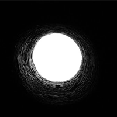
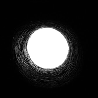

Un titulo sin nada
Esta web, está dedicada a la nada misma, y obvio que no sirve para nada, simplemente mostrar que la nada a veces sirve, para demostrar que los pensamientos vacios, muchas veces no son nada.
Sección 1 - Imágenes de la Nada
En las siguientes imágenes, mostramos lo que puede hace la nada. El poder de hacer nada, no se compara con nada, salvo dejar de hacer nada.

 

Sección 2 - Video de la Nada
También se han tomado videos de la Nada. Es un echo muy raro para la nada que se demuestra, pero en este caso, la nada demuestra que se puede hacer nada con solo no hacer nada.